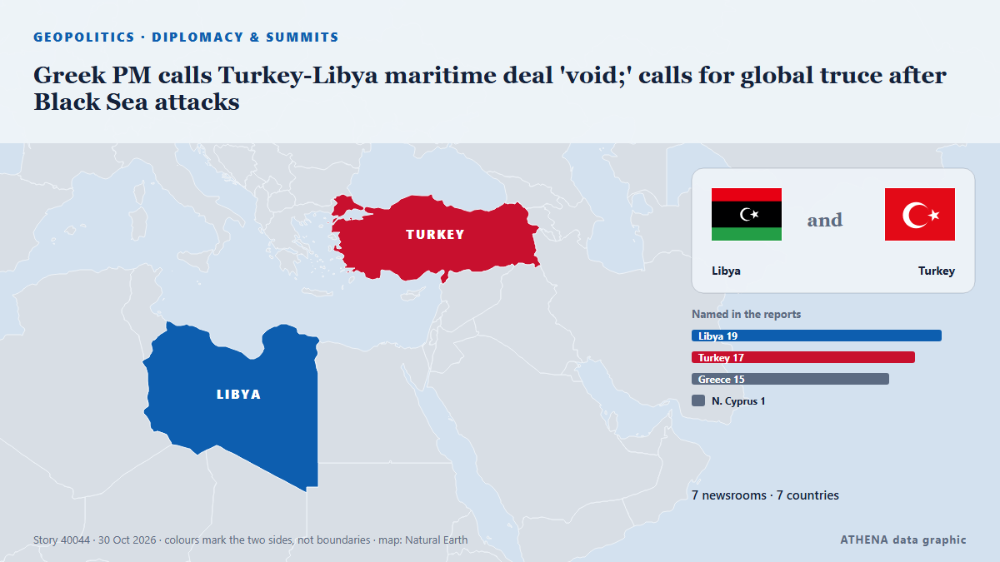

Greek PM calls Turkey-Libya maritime deal 'void;' calls for global truce after Black Sea attacks

UNITED NATIONS, Oct 29 - Greek Prime Minister Kyriakos Mitsotakis said on Thursday that the recently signed maritime deal between Libya's eastern parliament and Turkey was \"blatantly illegal, null… из The Straits Times
Независимые источники: 7 изданий в 7 странах, с 27 окт.; первым сообщил OilPrice.com; освещение идёт на спад. ATHENA оценивает риск как низкий (1.0/10), прежде всего из-за географического и отраслевого охвата и качества доказательств. Уверенность — 84 % (высокая); подтверждают независимые источники: 7 изданий, средняя надёжность источников — 79 %. СМИ по странам: Великобритания (1), Бразилия (1), Сингапур (1). Освещение: с 27 окт. по 30 окт., 64 ч.
Почему это важно: Греция и Турция — союзники по НАТО с давними разногласиями по Эгейскому морю, морским зонам Восточного Средиземноморья и Кипру. Этот мониторинг показывает, как мировая пресса освещает их отношения день за днём.
Что изменилось: 6 новых сообщений от 6 редакций за 24 часа до 30 окт..
Заголовки приводятся на английском языке, как они были опубликованы.
Коротко в цифрах
Отобрано, оценено и написано по опубликованной методологии ATHENA. Ни один редактор не вмешивается в отдельные события. Как это создаётся ›
| 27 Oct 21:00 UTC | 1 |
|---|---|
| 28 Oct 00:00 UTC | 0 |
| 28 Oct 03:00 UTC | 0 |
| 28 Oct 06:00 UTC | 0 |
| 28 Oct 09:00 UTC | 0 |
| 28 Oct 12:00 UTC | 0 |
| 28 Oct 15:00 UTC | 0 |
| 28 Oct 18:00 UTC | 0 |
| 28 Oct 21:00 UTC | 0 |
| 29 Oct 00:00 UTC | 0 |
| 29 Oct 03:00 UTC | 0 |
| 29 Oct 06:00 UTC | 0 |
| 29 Oct 09:00 UTC | 0 |
| 29 Oct 12:00 UTC | 0 |
| 29 Oct 15:00 UTC | 0 |
| 29 Oct 18:00 UTC | 3 |
| 29 Oct 21:00 UTC | 1 |
| 30 Oct 00:00 UTC | 0 |
| 30 Oct 03:00 UTC | 0 |
| 30 Oct 06:00 UTC | 1 |
| 30 Oct 09:00 UTC | 0 |
| 30 Oct 12:00 UTC | 1 |
| 27 Oct 21:05 UTC | 0.0 |
|---|---|
| 29 Oct 21:44 UTC | 1.0 |
| 30 Oct 13:19 UTC | 1.0 |
Откуда эти цифры
Значимость
Риск
Уверенность
Освещение — кто сообщил и когда
заголовок в оригинале · открывает источник- OilPrice.com · ВеликобританияTurkey’s Libya Deal Puts Oil Majors in a Bind
- The Rio Times · БразилияLibya Turkey Sea Deal Pits NATO Allies at UN
- The Straits Times · СингапурGreek PM calls Turkey-Libya maritime deal 'void;' calls for global truce after Black Sea attacks
- Al-Monitor · Соединенные ШтатыExclusive-Greek PM calls Turkey-Libya maritime deal 'void;' calls for global truce after Black Sea attacks
- Greek City Times · ГрецияGreek PM Rejects Turkey-Libya Maritime Deal, Urges Black Sea Truce
- Cyprus Mail · КипрMitsotakis calls Turkey-Libya maritime deal ‘blatantly illegal’
- Turkish Minute · ТурцияGreek PM calls Turkey-Libya maritime deal ‘void,’ urges Black Sea shipping truce: report